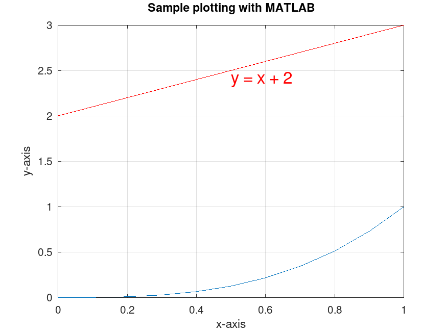
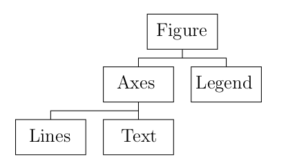

Visual Representations
One of the main qualities of Matlab is its capability to visualize mathematical results. It can plot graphs of functions, represents data sets using charts, etc. The focus of this document is on the representation of function. This choice is motivated by our personal needs.
There are versions of the functions plot, surf, plot3, contour, ... presented below that accept as arguments the mathematical functions that we define in the document . That document includes some examples that illustrate how to use these new graphics functions.
Drawings in ℝ2
Graph of a Function
Suppose that we want to plot the graph of a function \(f\) defined on an interval \([a,b]\).
- The first step is to create a list x of mesh points for the interval \([a,b]\). It is usual to take \(N + 1\) equally spaced points in the interval \([a,b]\). One way to create such a list is with the command x = a : h : b where h = (b-a)/N. Another way to create the same list is with the command x = linspace(a,b,N+1).
- The second step is to evaluate the function at each of the mesh points. To benefit from the matlab optimization, the function f must be an array smart function. The step can then be completed with the simple command y = f(x).
- Finally, we use the command plot(x,y, options) to draw the graph. There are several available options. We use some of them in the examples below. The reader may use the help for the function plot to get a complete listing of these options.
Example: We consider the function \(f\) defined by \(\displaystyle f(x) = x^3\) on the interval \([0,1]\). The following two commandes show how to generate \(11\) equally spaced points (\(10\) subintervals) including the end points of the interval.
>> x = 0:0.1:1
x = 0 0.1000 0.2000 0.3000 0.4000 0.5000 0.6000 0.7000 0.8000 0.9000 1.0000
or
>> x = linspace(0,1,11)
x = 0 0.1000 0.2000 0.3000 0.4000 0.5000 0.6000 0.7000 0.8000 0.9000 1.0000
To evaluate the function \(f\) defined by \(\displaystyle f(x) = x^3\) at the \(11\) points generated above, a simple array operation can be used.
>> y = x.^3
y = 0 0.0010 0.0080 0.0270 0.0640 0.1250 0.2160 0.3430 0.5120 0.7290 1.0000
Each component of y is the cube of the corresponding component in x. Finally, the following call to the Matlab function plot draws the graph of \(f\) over the interval \([0,1]\). The function plot use linear interpolation between the \(11\) equally spaced points to approximate the graph of the function \(f\).
>> plot(x,y), grid on
After having pressed the Enter key, a new window pops up with a figure containing the graph of the function.

More equally spaced points will produce a more accurate graph of the function.
It is possible to include in the same figure the graphs of several functions. The command hold on after having produce the first figure tells Matlab to draw the following graphs in the existing figure. The command hold off returns Matlab to the default mode which is to replace the present figure by a new one.
Example: Using the definition of the variable x above and assuming that the previous figure exists (i.e. it has not been closed), the following commands add the straight line \(y = x + 2\) to the previous figure containing the graph of \(f\).
>> hold on >> z = x + 2; >> plot(x,z,'r') >> text(0.5,2.4,'y = x + 2','Color','red','FontSize',16)
The figure is now

The option 'r' of the previous plot command tells Matlab to draw the line \(y = x + 2\) in red.
A title and axis labels can be added to the figure using the Matlab functions title to produce the title, xlabel to label the \(x\) axis and ylabel to label the \(y\) axis. The following example shows how to use these functions.
Example: Suppose that the following commands are parts of the session that produced the previous figure and that this figure is still existing (i.e. the figure has not been closed).
>> title('Sample plotting with MATLAB')
>> xlabel('x-axis')
>> ylabel('y-axis')
These commands add to the previous figure the
title Sample plotting with MATLAB
and the labels
x-axis
and y-axis
to obtain the following figure.

Drawing of a Curve
Suppose that we want to draw a curve given by the parametric representation \( (x,y) = (f(t),g(t)) \) for \( a \leq t \leq b \).
- The first step is to create a list t of mesh points for the interval \([a,b]\). As we did to draw the graph of a function, it is usual to take \(N + 1\) equally spaced points in the interval \([a,b]\).
- The second step is to evaluate the parametric representation at each of the mesh points. As usual, we assume that the functions f and g that form the components of the parametric representation are array smart. This step can then be completed with commands x = f(t) and y = g(t).
- Finally, we use the command plot(x,y, options) to draw the curve.
Example: Suppose that we want to plot the curve given by the parametric representation \( (x,y) = (\sin(t), t\cos(t)) \) for \(0 \leq t \leq 20 \).
The following Matlab commands draw this curve.
>> t = 0:0.05:20; ...
x = sin(t); ...
y = t.*cos(t); ...
plot(x,y,'b'); ...
xlabel('x') , ylabel('y');

To mark the points on the curve that are associated to the integer values of \(t\), we use the following commands.
>> hold on, ... t = 0:1:20; ... x = sin(t); ... y = t.*cos(t); ... plot(x,y,'*b');

The third argument in plot above tells Matlab to only plot a red asterisk at each point.
Note: The ellipsis (...) at the end of a line tells Matlab to read the next line before executing the commands.
Interpolation
Polynomial interpolation can be used in Matlab.
Example: We draw the linear interpolation of the function \(f\) associated to the data in the table below.
| x | 0 | 0.7854 | 1.5708 | 2.3562 | 3.1416 |
|---|---|---|---|---|---|
| y | 0 | 0.5554 | 1.5708 | 1.6661 | 0.0000 |
The data for \(x\) and \(y\) are stored in two vectors in Matlab.
>> x = [ 0 0.7854 1.5708 2.3562 3.1416 ]
x = 0 0.7854 1.5708 2.3562 3.1416 >> y = [ 0 0.5554 1.5708 1.6661 0.0000 ]
y = 0 0.5554 1.5708 1.6661 0
Assuming that the previous figure has been closed (or that the command hold off has been used), the following command draws the linear interpolation of \(f\).
>> plot(x,y);

The linear interpolation of \(f\) can be evaluated at some points using the Matlab function interp1.
Example: Suppose that the points where the linear interpolation of \(f\) has to be evaluated are \(0, \pi/10 , \pi/5 , 3\pi/10, \ldots, \pi\). These points may be listed in Matlab as it follows.
>> z = linspace(0,pi,11)
z = 0 0.3142 0.6283 0.9425 1.2566 1.5708 1.8850 2.1991 2.5133 2.8274 3.1416
The next Matlab command computes the value of the linear interpolation of \(f\) at the \(11\) equally spaced points in z.
>> w = interp1(x,y,z,'linear')
w = 0 0.2222 0.4443 0.7585 1.1646 1.5708 1.6089 1.6470 1.3329 0.6665 0.0000
We have that w(k) is the value of the linear interpolation of the function \(f\) evaluated at z(k). The following commands plot the points with coordinates \((x,y)\) where \(x\) and \(y\) are z(k) and w(k) respectively for \(k = 1, 2, \ldots, 11\).
>> hold on; ... plot(z,w,'or');

The third argument in plot above tells Matlab to only plot a red circle at each point.
There are other methods of interpolation than linear (the default), like cubic and spline. To use these methods, it suffices to follow the steps in the previous example but substituting linear by cubic or spline. To compare these methods, the reader should try these methods with the two previous examples.
Drawings in ℝ3
Graph of a Function
The procedure to draw the graph of a real valued function of two variables is very similar to the procedure to draw the graph of a real valued function of one variable. Suppose that we want to plot the graph of a function \(f\) defined on the rectangle \([a,b]\times [c,d]\).
- The first step is to create mesh points for \([a,b]\times [c,d]\). For a function of two variables, we use the function meshgrid. This function requires two lists of mesh points as arguments, a list x of mesh points for the interval \([a,b]\) and a list y of mesh points for the interval \([c,d]\), and generates two matrices. Suppose that x is a list of Nx mesh points and y is a list of Ny mesh points. Then [X,Y] = meshgrid(x,y) generates two matrices, X and Y, of dimensions Ny × Nx, where the list of mesh points x is repeated in each row of X and the list of mesh points y is repeated in each column of Y. Hence, (x(j),y(i)) = (X(i,j), Y(i,j)).
- The second step is to evaluate the function at each of the mesh points (x(j),y(i)). As usual, we assume that the function f is array smart. This step can then be completed with the command Z = f(X,Y). The matrix Z generated by the function f is of dimensions Ny × Nx where Z(i,j) is the value of f at the point (x(j),y(i)).
- Finally, we use the command surf(X,Y,Z,options) to draw the graph.
Example: To draw the graph of the function \(f\) defined by \(f(x,y) = \sin(x+y) x^2 y \) for \(-5 \leq x \leq 5\) and \(-3 \leq y \leq 3\), we use the following commands.
>> [X,Y] = meshgrid(-5:0.1:5,-3:0.1:3); ...
Z = sin(X+Y).*X.^2.*Y; ...
surf(X,Y,Z); ...
xlabel('x') , ylabel('y') , zlabel('z');

If we select the option Tools ⟹ GUI mode (on all axes) ⟹ Rotate on in the menu on the top of the window displaying the graph, we can then use the left button of our mouse to rotate the figure in the space. This is quite useful when we need to change our viewpoint to get a better view of the graph.
Drawing of a Curve
The procedure to draw a curve in \(\mathbb{R}^3\) is basically identical to the procedure to draw a curve in \(\mathbb{R}^2\). Suppose that we want to draw a curve given by the parametric representation \( (x,y,z) = (f(t),g(t),h(t)) \) for \( a \leq t \leq b \).
- The first step is to create a list t of mesh points for the interval \([a,b]\).
- The second step is to evaluate the parametric representation at each of the mesh points. As usual, we assume that the functions f, g and h that form the components of the parametric representation are array smart. This step can then be completed with commands x = f(t), y = g(t) and z = h(t).
- Finally, we use the command plot3(x,y,z,options) to draw the curve.
Example: Suppose that we want to plot the curve given by the parametric representation \( (x,y) = (\sin(t), t\cos(t), t^2) \) for \(0 \leq t \leq 20 \).
The following Matlab commands draw this curve.
>> t = 0:0.05:20; ...
x = sin(t); ...
y = t.*cos(t); ...
z = t.^2; ...
plot3(x,y,z,'b'); ...
xlabel('x'), ylabel('y'), zlabel('z'); ...
grid on

The function plot3 can do more than drawing continuous curves as the next example shows.
Example: We can use plot3 to draw the frame of a box with all its edges of length 1 centred at the origin.
>> close
>> x=[ 0 1 1 0 0 0 1 1 0 0 ]; ...
y=[ 0 0 1 1 0 0 0 1 1 0 ]; ...
z=[ 0 0 0 0 0 1 1 1 1 1 ]; ...
plot3(x-0.5,y-0.5,z-0.5,'b');
>> hold on, ...
x=[ 1 1 ]; ...
y=[ 0 0 ]; ...
z=[ 1 0 ]; ...
plot3(x-0.5,y-0.5,z-0.5,'b');
>> x=[ 1 1 ]; ...
y=[ 1 1 ]; ...
z=[ 0 1 ]; ...
plot3(x-0.5,y-0.5,z-0.5,'b');
>> x=[ 0 0 ]; ...
y=[ 1 1 ]; ...
z=[ 1 0 ]; ...
plot3(x-0.5,y-0.5,z-0.5,'b'); ...
axis('square'); ...
grid on

The reader should stop after each plot3 command to observe how the frame of the box is drawn. For instance, the first call to plot3 draws successively a straight line from \( (0.0.0) \) to \( (1,0,0) \), a straight line from \( (1,0,0) \) to \( (1,1,0) \), a straight line from \( (1,1,0) \) to \( (0,1,0) \), a straight line from \( (0,1,0) \) back to \( (0,0,0) \), a straight line from \( (0,0,0) \) to \( (0,0,1) \), and so one. The other calls to plot3 draw the missing edges of the box. The command axis('square') ensure that the same scale is used for all three axis. That way, our box really look like a box with edges of equal length.
There is a more compact way to draw the frame of the box.
>> cla, ...
x=[ 0 1 1 0 0 0 1 1 0 0 NaN 1 1 NaN 1 1 NaN 0 0]; ...
y=[ 0 0 1 1 0 0 0 1 1 0 NaN 0 0 NaN 1 1 NaN 1 1]; ...
z=[ 0 0 0 0 0 1 1 1 1 1 NaN 1 0 NaN 0 1 NaN 1 0]; ...
cube = plot3(x-0.5,y-0.5,z-0.5,'b'); ...
axis('square'); ...
grid on

The points with coordinates [NaN NaN NaN] interrupt the drawing and thus insert a jump from the point before to the point after [NaN NaN NaN]. For instance, no straight line is drawn between [0 0 1] to [NaN NaN NaN].
We can use the following command to rotate the frame of our box by 45 degrees around the axis that contains the vector \( (1,1,1)\), .
>> rotate(cube, [ 1 1 1 ], 45 );

It is possible to perform more general rotation in \(\displaystyle \mathbb{R}^3\) by selecting origin and direction of the axis of rotation.
More Drawings
All types of plots that can be done with Matlab are listed on the website . We are only going to give examples for some of them.
Example: To plot 10 level curves of the function \(f\) defined by \(f(x,y) = \sin(x+y) x^2 y \) for \(-5 \leq x \leq 5\) and \(-3 \leq y \leq 3\), we use the following commands.
>> close
>> [X,Y] = meshgrid(-5:0.1:5,-3:0.1:3); ...
Z = sin(X+Y).*X.^2.*Y; ...
contour(X,Y,Z,10,'ShowText','on'); ...
grid on , xlabel('x') , ylabel('y');

We may select the level curves that we want to plot. For instance, suppose that we want the level curves given by \(f(x,y) = -2\) and \(f(x,y) = -6\). We can plot them with the following command.
>> close
>> contour(X,Y,Z,[-2,-6],'ShowText','on'); ...
grid on , xlabel('x') , ylabel('y');

Example: To plot the curve defined by the equation in polar coordinates \( r = 1 + \cos(\theta) \), we use the following commands.
>> close >> theta = 0:0.01:2*pi; ... r = 1 +cos(theta); ... polarplot(theta,r);

The function polarplot is not implemented in Octave. The function polar may be used instead.
Example: A popular topic in calculus is drawing surfaces of revolution. For instance, suppose that we want to draw the surface of revolution generated by the rotation of the curve \( y = 2 + \cos(\pi x) \) for \(0 \leq x \leq 4\) around the \(x\) axis. We first plot this curve.
>> close
>> x = 0:0.02:4; ...
y = 2+cos(pi*x); ...
plot(x,y,'b'); ...
xlabel('x'), ylabel('y'); ...
grid on

We use Matlab to draw the surface of revolution.
>> cla, ...
[X,Y,Z] = cylinder(y); ...
surf(4*Z,X,Y); ...
xlabel('x'), ylabel('y'), zlabel('z'); ...
grid on

The reader has probably noted that we have used the command surf(4*Z,X,Y) instead of the command surf(X,Y,Z) as it may have been expected. Each column of Z lists the commponents of z = linspace(0,1,length(x)). For i fixed, the set of points (X(i,j),Y(i,j)) for all j represents the cross section of the surface of revolution with \(x\) equals to x(i), and Z)i,j) = z(i) for all j. If x = a:h:b, then z(i) = (i-1)/(length(x)-1)\) and x(i) = a + (i-1)*h = a + z(i)*(b-a) for 1 <= i <= length(x). Therefore, we have to change the order of X, Y and Z to display the surface of revolution horizontally instead of vertically. We also have to map the value on each row of Z to its associated value of x.
Hint: Increasing the number of mesh points in x will generate a smoother surface of revolution but the resulting figure may not display a clear image of the surface of revolution. The reader should repeat this example with x = 0:0.01:4; to understand why it is so.
The subplot Function
It is possible to stack many drawings in the same figure with the matlab function subplot. The basic format of this function is subplot(n,m,k); where \(n\) is the number of rows, \(m\) is the number of drawings per row, and \( k \) is the number associated to the drawing on the \(p^{th}\) row and \( r^{th} \) column such that \( (k-1)/m = (p-1) m + (r-1)\) with \(0 < r \leq m\) and \(0 < p \leq n\).
Example: We want to plot the graphs of the function \(f_\mu\) defined by \(f_\mu(x,y) = (x\cos(\mu) - y\sin(\mu))(x\sin(\mu) + y \cos(\mu)) \) for \( -2 \leq x,y \leq y\) and \( \mu = 0, \pi/4, \pi/2, 3\pi/4 \), and display them on two rows in the same figure.
>> close
>> [X,Y] = meshgrid(-2:0.05:2,-2:0.05:2);
>> for i = 1:4
mu = (i-1)*pi/4;
Z = (X.*cos(mu) - Y.*sin(mu)).*(X.*sin(mu) + Y.*cos(mu));
subplot(2,2,i);
surf(X,Y,Z);
xlabel('x'), ylabel('y'), zlabel('z'), grid on;
if ( i == 1 )
ttl = title('$\mu = 0$','interpreter','latex');
elseif ( i == 2 )
ttl = title('$\mu = \pi/4$','interpreter','latex');
elseif ( i == 3 )
ttl = title('$\mu = \pi/2$','interpreter','latex');
else
ttl = title(['$\mu = ',num2str(i-1),'\pi/4$'],'interpreter','latex');
end
end

The previous code probably requires some explanation.
Instead of repeating four time the block of commands starting with
subplot(2,2,i) for 1 ≤ i ≤ 4, we have
created a loop. To get a nice title for each dessin, we have requested that
LaTeX be used to interpret the title. Hence \mu
and \pi
are displayed as μ and π
respectively. The reader should not expect a full version
of LaTeX but one that is sufficient for displaying must
mathematical formulae.
Graphics Objects
We end this document with a brief and simplified presentation of the graphics object hierarchy. Knowledge of objects that compose a figure and being able to modify some of their properties are sometime useful to generate a beautiful and accurate figure. The following diagram is a simplified version of the structure of a figure.

When the functions plot, surf, ... are used, the following objects are created.
- A Figure object.
- An Axes object which is a child to the Figure object.
- Some Lines objects (a graph, a surface, ...) and some Text objects (text added to the drawing) which are children of the Axes object.
- A Legend object, if one is requested, which is a child of the Figure object.
Suppose that we execute the following commands.
>> close
>> x = 0:0.02:4; ...
y = x.^2.*exp(-x); ...
p1 = plot(x,y,'b'); ...
hold on; ...
y = x.^2.*exp(-2*x); ...
p2 = plot(x,y,'r'); ...
xl = xlabel('x'); ...
yl = ylabel('y'); ...
l1 = legend('x^2 exp(-x)','x^2 exp(-2x)');

The following command returns the handle of the current Figure object that has been created by the first call to the function plot.
>> h1 = gcf;
We can then use this handle to modify the Figure object. For instance, we can change the background colour with the following command.
>> h1.Color = [ 0.5 0.5 0.5];

The previous command does not work for old versions of Matlab. Instead, the command set(h1,'Color', [ 0.5 0.5 0.5]) must be used. The command get(h1) lists all the possible properties of the Figure object with their values.
The following command returns the handle of the Axes object which is a child of the current Figure object that has been created by the function plot.
>> h2 = gca;
We can then use this handle to modify the Axes object. For instance, we can change the background colour and the colours of the axes with the following command.
>> h2.Color = [ 0.7 0.8 0.9]; ... h2.XColor = [ 1 0 0]; ... h2.YColor = [ 1 0 0];

As before, the previous commands do not work for old versions of Matlab. Instead, the commands set(h2,'Color',[ 0.7 0.8 0.9]), set(h2,'XColor',[ 1 0 0]) and set(h2,'YColor',[ 1 0 0]) must be used. The command get(h2) lists all the possible properties of the Axes object with their values.
The following command list the handles of the children of the Figure object,
>> h1c = h1.Children
h1c = 2×1 graphics array: Legend (x^2 exp(-x), x^2 exp(-2x)) Axes
For old versions of Matlab, we must use the command h1c = get(h1,'Children'). As expected, there are two children. One of the two handles is the handle associated to the Axes object and the other is the handle associated to the Legend object.
>> h1c(1).Children, l1.Children, h1c(2).Children, h2.Children
ans = 0×0 empty GraphicsPlaceholder array. ans = 0×0 empty GraphicsPlaceholder array. ans = 2×1 Line array: Line (x^2 exp(-2x)) Line (x^2 exp(-x)) ans = 2×1 Line array: Line (x^2 exp(-2x)) Line (x^2 exp(-x))
For old versions of Matlab, we must use the command get(h1c(1),'Children'), get(h1c(2),'Children'), get(h2,'Children') and get(l1,'Children'). The Axes object has two children: one Lines object for each of the two curves generated by the function plot. The Legend object does not have children.
The following command list the handles of the children of the Axe object, the handles of the Lines objects associated to the two curves drawn with the function plot, and the descriptions of these Lines objects.
>> h2c = h2.Children, p1, p1.DisplayName, p1.Type, ... p2, p2.DisplayName, p2.Type
h2c = 2×1 Line array: Line (x^2 exp(-2x)) Line (x^2 exp(-x)) p1 = Line (x^2 exp(-x)) with properties: Color: [0 0 1] LineStyle: '-' LineWidth: 0.5000 Marker: 'none' MarkerSize: 6 MarkerFaceColor: 'none' XData: [0 0.0200 0.0400 0.0600 0.0800 0.1000 0.1200 0.1400 0.1600 0.1800 0.2000 … ] (1×201 double) YData: [0 3.9208e-04 0.0015 0.0034 0.0059 0.0090 0.0128 0.0170 0.0218 0.0271 … ] (1×201 double) Show all properties ans = 'x^2 exp(-x)' ans = 'line' p2 = Line (x^2 exp(-2x)) with properties: Color: [1 0 0] LineStyle: '-' LineWidth: 0.5000 Marker: 'none' MarkerSize: 6 MarkerFaceColor: 'none' XData: [0 0.0200 0.0400 0.0600 0.0800 0.1000 0.1200 0.1400 0.1600 0.1800 0.2000 … ] (1×201 double) YData: [0 3.8432e-04 0.0015 0.0032 0.0055 0.0082 0.0113 0.0148 0.0186 0.0226 … ] (1×201 double) Show all properties ans = 'x^2 exp(-2x)' ans = 'line'
For old versions of Matlab, we must use the commands h2c = get(h2,'Children'), get(p1,'DisplayName'), get(p1,'Type'), get(p2,'DisplayName') and get(p2,'Type'). We can change the line style and color of the first curve with the following commands.
>> p1.LineStyle = '-.'; p1.Color = 'g';

For old versions of Matlab, we must use the commands set(p1,'LineStyle','.-') and set(p1,'Color','g').
Advice: The use of the Children property to retrieve the handles of the children of the Figure and Axes objects is strongly discouraged. The order in which the handles are listed is arbitrary. It is then difficult to locate the handle associated to the object that we want to modify. It is better to get the handle of the object when it is created as we did with the commands p1 = plot(x,y,'b'), p2 = plot(x,y,'r'), xl = xlabel('x'), yl = ylabel('y') and l1 = legend('x^2 exp(-x)','x^2 exp(-2x)') above.
As much as possible, it is also preferable to avoid modifying the properties of an object using its handle. It is preferable to set the properties when the object is created as we did with the commands p1 = plot(x,y,'b') and p2 = plot(x,y,'r'). The general format to set the properties of an object when it is created is
Example: We can have more then one active figure at the same time. The following commands demonstrate how this can be done.
>> close
>> x = 0:0.02:2; y = x.^2; z = sqrt(x); w = x.^(3/2); ...
f1 = figure; plot(x,y); title('y = x^2 and y = x^{3/2}'); ...
f2 = figure; plot(x,z); title('$y = \sqrt{x}$','Interpreter','latex'); ...
figure(f1); hold on; plot(x,w,'r'); text(1,0.9,'(1,1)');


The command f1 = figure creates a Figure object that becomes the current figure. The following two graphics commands use this Figure object. The command f2 = figure creates a new Figure object that becomes the current figure. The following two graphics commands use this new Figure object. Finally, the command figure(f1) set the Figure object with the handle f1 as the current figure for the future graphics commands.
Example: A Figure object can have more than one Axes object as children. The following example taken from the Matlab website demonstrates how this can be done. The Matlab function peaks is a built-in real valued function of two variables.
>> close all
>> x = -2.5:0.02:2.5; ...
y = -4:0.02:4; ...
[X,Y] = meshgrid(x,y); ...
Z = peaks(X,Y); ...
figure; ...
ax1 = axes('Position',[0.1 0.1 0.7 0.7]); ...
ax2 = axes('Position',[0.65 0.65 0.28 0.28]); ...
contour(ax1,X,Y,Z); ...
grid(ax1,'on'), ...
surf(ax2,X,Y,Z); ...
colormap(ax2,summer);